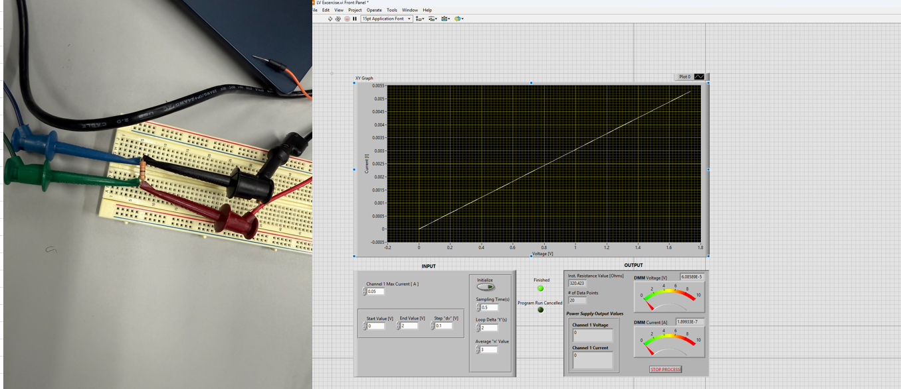
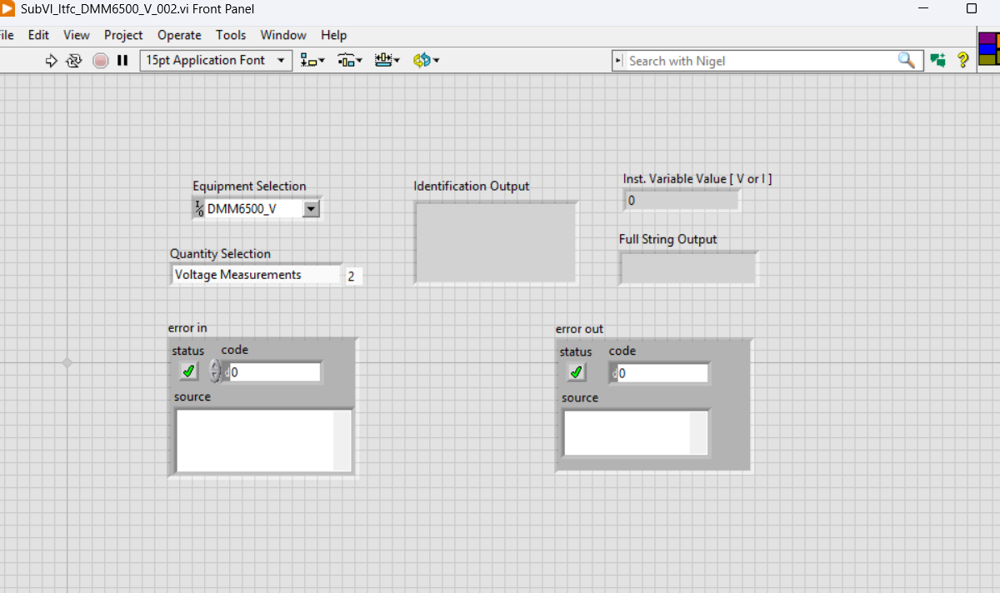
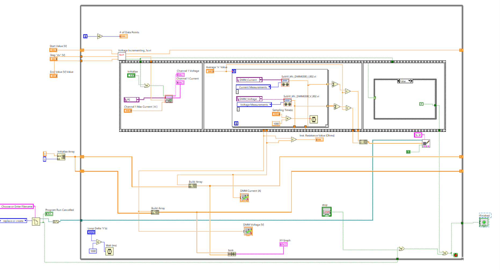

LabVIEW
Developed the main VI and subVIs for instrument control, live measurements, I–V visualization and Excel data logging.
ACADEMIC PROJECT · LABVIEW
Developing a LabVIEW VI to control a programmable power supply, acquire DMM measurements, calculate resistance, visualize I–V data, and export results to Excel.

01 / OVERVIEW
I independently developed a LabVIEW virtual instrument and supporting subVIs to control a programmable power supply and acquire voltage and current readings from a digital multimeter. The VI calculates resistance using Ohm’s law, plots current against voltage, and exports measurement data to Excel.
02 / SYSTEM DESIGN
03 / IMPLEMENTATION



04 / TESTING
I tested the VI with a nominal 330 Ω resistor. The documented screenshot shows a calculated resistance of approximately 320.423 Ω, close to the nominal value, along with an approximately linear I–V relationship. This was an initial functional check, not a calibrated accuracy study.
05 / CHALLENGES
I worked through VISA instrument communication, corrected subVI connector-pane configuration, and revised the dataflow after an initial Excel export setup created the file before the readings were available.
SKILLS IN PRACTICE
Here is how the tools and techniques from my Technical Skills section were applied to this project.
Developed the main VI and subVIs for instrument control, live measurements, I–V visualization and Excel data logging.
Built and tested the resistor measurement circuit to check the acquisition and resistance-calculation workflow.